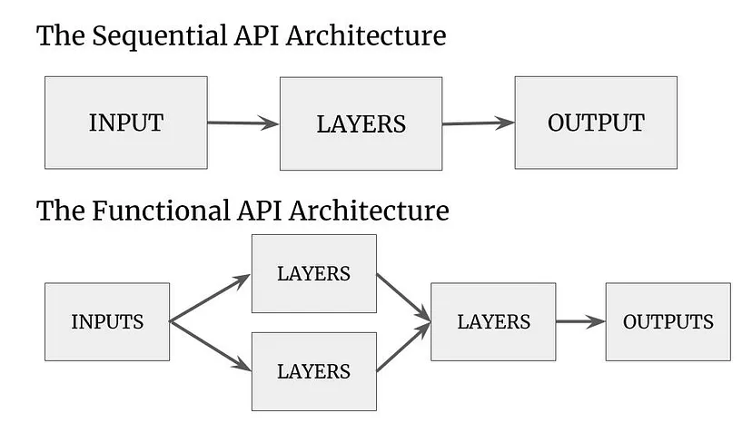
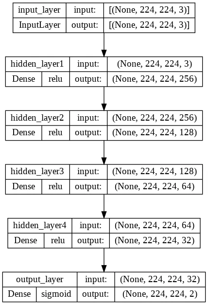
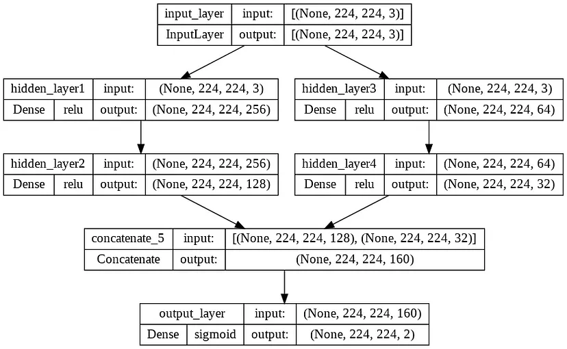

What is a Neural Network?
“A computer system modeled on the human brain and nervous system.” You can google it and this is the answer you will get. It’s a simple answer but does not explain why it is used in Deep Learning.
Neural Network also known as an Artificial Neural Network, mimics the same architecture of our human brain. It’s the core of any Deep Learning or Machine Learning Algorithm. It consists of three essential factors also called Nodes or Layers, that make up the neural network architecture. First, the Input Layer is the entry point for any data. After the data passes through the input layer it moves toward multiple Hidden Layers, this is where patterns are learned by the neural network using weights and biases. Once the network has reached its mathematical conclusion in the hidden layers it passes to the Output Layer.
Now, that we understand a neural network, how do we practically use them? Here comes TensorFlow, an open-source Python library for Deep Learning. TensorFlow helps us in creating neural network models that are capable to solve different types of deep learning problems, due to the complexity of neural networks TensorFlow uses the Keras library to make it simple and easy to use.
Tensorflow and Keras provide us with two different methods to initiate and implement our neural network architecture, they are as follows:
- The Sequential API Model
- The Functional API Model

1. The Sequential API Model
The very first model that TensorFlow teaches us is the Sequential Model because it is the fastest and the simplest way to create a neural network. Now you might be wondering when to use a sequential model. You use it when you have one input and one output, just like everything moves in a sequence, one at a time.
Sequential Model Example:
import tensorflow as tf
# Sequential Model
model = tf.keras.Sequential(
[
# Input Layer
tf.keras.Input(shape=(224, 224, 3), name="input_layer"),
# 4 Hidden Layers
tf.keras.layers.Dense(256, activation="relu", name="hidden_layer1"),
tf.keras.layers.Dense(128, activation="relu", name="hidden_layer2"),
tf.keras.layers.Dense(64, activation="relu", name="hidden_layer3"),
tf.keras.layers.Dense(32, activation="relu", name="hidden_layer4"),
# Output Layer
tf.keras.layers.Dense(2, activation="sigmoid", name="output_layer")
]
)
# The above code can also be written using add() method.
model = tf.keras.Sequential()
model.add(tf.keras.Input(shape=(224, 224, 3), name="input_layer"))
model.add(tf.keras.layers.Dense(256, activation="relu", name="hidden_layer1"))
model.add(tf.keras.layers.Dense(128, activation="relu", name="hidden_layer2"))
model.add(tf.keras.layers.Dense(64, activation="relu", name="hidden_layer3"))
model.add(tf.keras.layers.Dense(32, activation="relu", name="hidden_layer4"))
model.add(tf.keras.layers.Dense(2, activation="sigmoid", name="output_layer"))
If you are seeing this for the first time you might get confused, and questions might arise like what shape, Dense, activation, relu, sigmoid, and multiple different numbers? Let’s understand everything line by line.
The first line initiates the sequential function within the name ‘model’. You can click and check the documentation for the sequential function.
Within the sequential model, there is a list with multiple layers. The first layer is the Input layer with a shape 224, 224, 3. This tells us that the data is an image array, here you can change the shape to whatever your data is been processed in.
After the input layer, there are 4 fully dense hidden layers. In the sequential model, the output of the layer is the input for the next layer. Layers are basically Keras functions that apply certain mathematical calculations to learn patterns. In the hidden layer part, you can even add a sequential model as a layer, this way you can nest a model within a model.
Once we get an output from the last hidden layer, it goes through the output layer which is activated using sigmoid(another mathematical calculation for binary classification) this gives us an output result for our problem.
2. The Functional API Model
Keras understood that the sequential model had some limitations like it couldn’t handle multiple inputs and outputs. It is not flexible enough to build a neural network that has shared layers or a non-linear branched topology. Although, sequential models were capable to produce great results. It was not capable enough to solve complex problems like object detection in computer vision, speech-to-text recognition, or vice versa, and many more. Finally, Keras came up with Functional API, here everything is isolated and combined however you see fit. A neural network that is now customizable layer-to-layer.
Functional API Example:
# Taking similar example as above and making it more complex
# importing packages
import tensorflow as tf
from tensorflow.keras.models import Model
from tensorflow.keras.layers import Input, Dense, concatenate
# Input Layer
inputs = Input(shape=(224, 224, 3), name="input_layer")
# Two branches of hidden layers
# First branch
layer_x1 = Dense(256, activation="relu", name="hidden_layer1")(inputs)
layer_x2 = Dense(128, activation="relu", name="hidden_layer2")(layer_x1)
# Second branch
layer_y1 = Dense(64, activation="relu", name="hidden_layer3")(inputs)
layer_y2 = Dense(32, activation="relu", name="hidden_layer4")(layer_y1)
# Concatenate layer
cat_layer = concatenate([layer_x2, layer_y2])
# Output Layer
outputs = Dense(2, activation="sigmoid", name="output_layer")(cat_layer)
# Defining the model
model = Model(inputs = inputs, outputs = outputs)
Now, that you understand sequential architecture, the above functional API example should be easier for you. Most of the layers used in this example are similar to the sequential example. Just the way to represent the model has changed, but this change is powerful enough to build some of the famous pre-trained models(e.g. AlexNet, VGG, ResNet, Densenet, and many more). Let’s understand the changes that are happening in the functional API model.
Similar to the sequential model example, we initialize the model by importing the packages and creating our first layer — the input layer, but unlike the sequential model, we do not need to use any Keras function and can directly name the layers using a variable.
Now the fun part starts, we have used 4 hidden layers separated into two different branches. In Functional API, layers communicate by letting them know which layer is connected. If you look at the hidden layer “layer_x1”, at the end of the Dense layer statement it mentions the layer connected i.e. the input layer. This way you can chain any layer with each other and forward pass the model.
Now that we have created two branches but need the output from a single layer, we can use the concatenate layer. The last layer of the branches is the input for the concatenate layer which is finally connected with the output layer to give us the output probabilities.
All the layers are connected, so it is time to define the model, for this we will be using the Keras Model function. The Model function needs two Arguments inputs and outputs. It basically tells the start and end point and the flow of the model is created.
Closing
We have covered both the Sequential and Functional Model architecture in this article. Experimented with both and understood the pros and cons, with this you are now capable enough to create your neural network. By the way, there’s a third method that I haven’t mentioned in this article. It’s called the Model subclassing method. I do not recommend this for a beginner to begin their journey in deep learning, it is much more complex and difficult to understand however powerful enough to create your own custom layers and models.
I hope that you enjoyed this article and that it serves you well. Please reach out to me or you can comment down if you run into any trouble with what I wrote. I am more than happy to improve my article so that it can help more people.